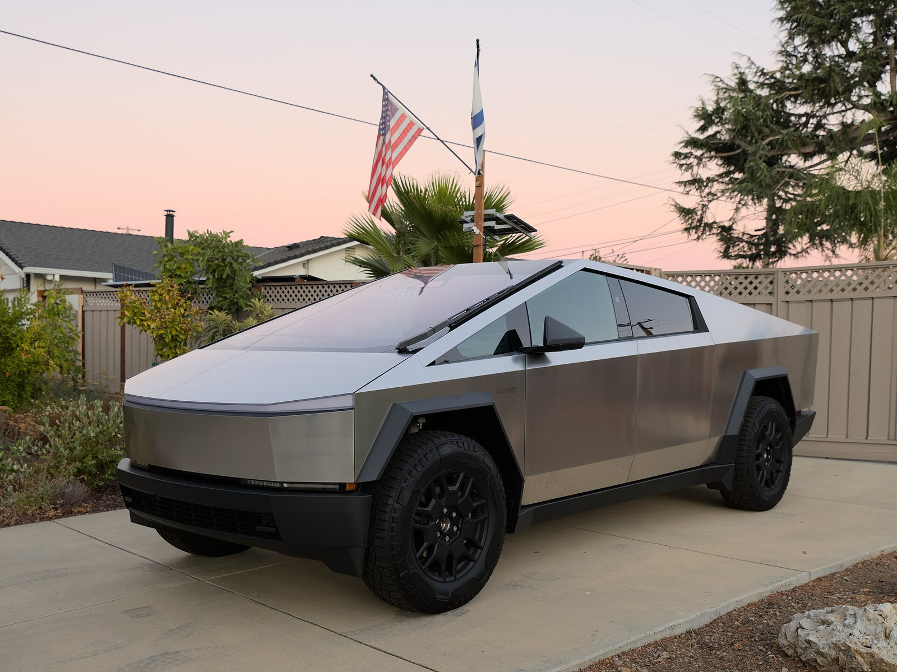
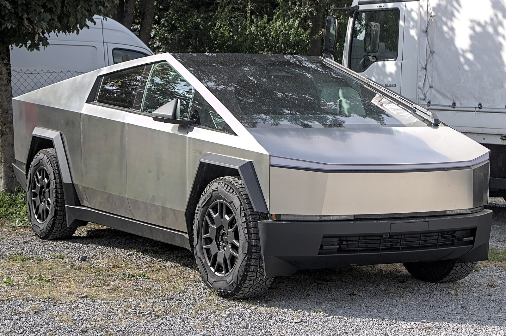

Cybertruck 第一次看到的时候真觉得不像车，像一块折出来的金属板，棱是直的，几乎没有弧线。
它用的是不锈钢车身，48V 的电气系统，方向盘和轮子之间还是线控的，没有机械连接。发布会上还砸过一次玻璃，结果裂了，这个梗一直跟着它。
「喷气」说的其实是另一台车：Roadster 有个 SpaceX 选装，车尾装一组冷气推进器，靠喷高压气体往前推。特斯拉说 0-100 能进 1 秒，不过到现在也还只是概念，没真的上路。


← 返回首页